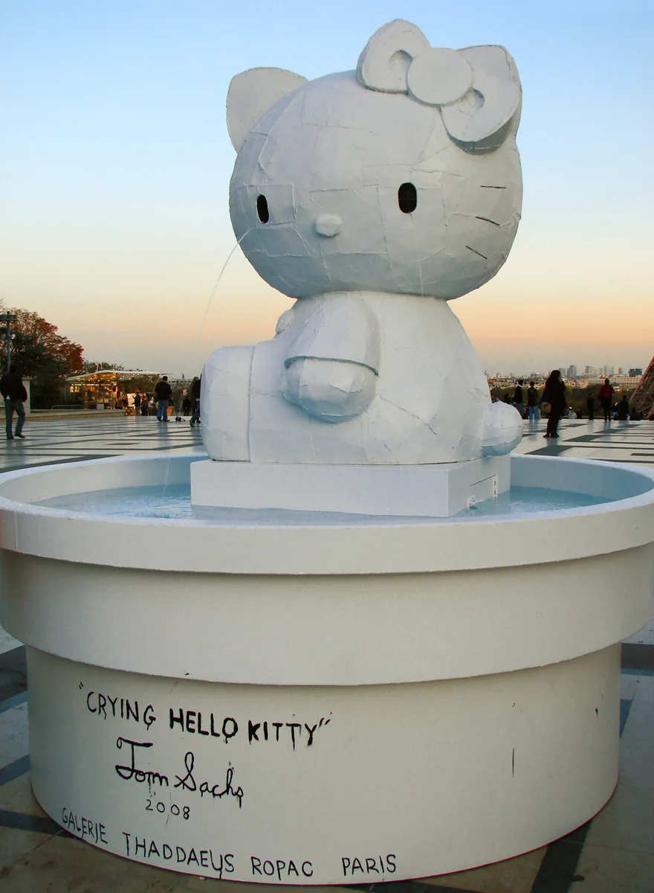
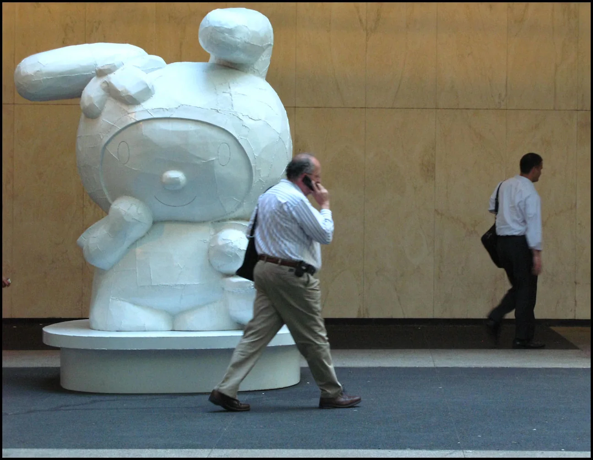
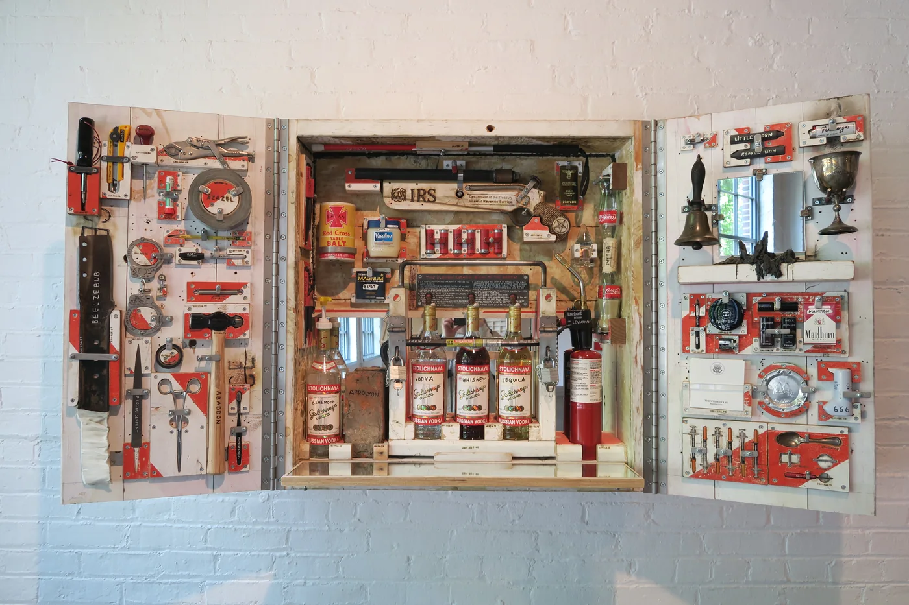
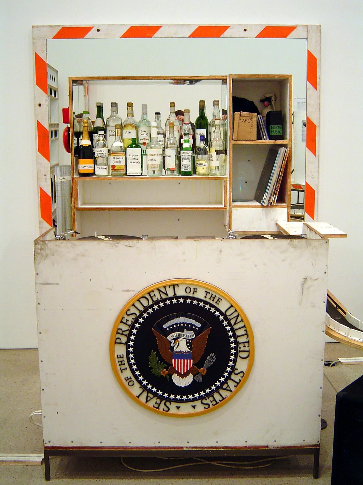
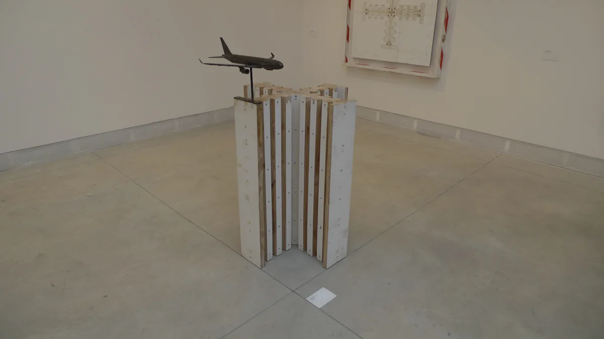

Tom Sachs was born in New York in 1966 and grew up in Connecticut taking things apart. After architecture school in London and a sculpture degree at Bennington he worked in the furniture shop of the architect Frank Gehry, where a janitor named Andrew Kromelow ended each day by laying every tool out at right angles, the way Knoll furniture is displayed. He called it knolling. Sachs has been doing it, and making everyone who works for him do it, ever since.
He came to attention in the 1990s by putting luxury logos on the wrong objects: a Chanel guillotine, a Hermès hand grenade, a Prada toilet. Then the work got bigger and more sincere. A scale model of a town with a working McDonald's, called Nutsy's. Painted-bronze cartoon cats and rabbits taller than the people walking past them. A plywood lunar module, and then a whole mission to Mars staged in a Manhattan armoury with a mission control and a crew that never broke character. A tea house. A pair of sneakers for NASA that never went to NASA.


The material is the point. Sachs builds in plywood, foam core, resin, steel and hot glue, and he leaves the screws, the pencil marks and the glue drips where you can see them, so a spacecraft looks like a spacecraft and also like the afternoon somebody spent making it. He calls it bricolage and means it as a discipline rather than an excuse: the object should tell you honestly how it was put together. The studio works the same way. Its spaceflights run on real checklists and real procedures, because the ritual of doing a thing properly is most of the work. A tea ceremony gets the same treatment as a Mars landing. So does a sandwich.

Every new person in the studio watches a film before they touch a tool. Ten Bullets, made in 2012 by the filmmaker Van Neistat from the studio's own written manual, is exactly what it says: ten rules, numbered and explained. Work to code. Sacred space. Be on time. Thoroughness counts. I understand. Sent does not mean received. Keep a list. Always be knolling. Sacrifice to Leatherface. Persistence. Most of them are about paper. The day's tasks go on a list, in handwriting, and get crossed off in front of everyone. Sent does not mean received, so you walk over and check. You say "I understand" out loud so the person giving the instruction knows it landed. When a rule turns out to be wrong it is corrected by hand and pinned back up, corrections showing.


Always be knolling is the one people remember, because you can see it: tools at right angles on a clean surface, grouped by kind, nothing touching. It looks like fussiness. It is really a way of being able to see what you have, which is most of what a list is for. What Sachs has built is a studio that can make almost anything because it never has to argue about how. The how is written down. The list is on the wall. You cross things off, and you knoll the bench before you go home. Write the rules down where you will see them. Keep the day's list on paper. Leave the corrections showing. And put things back at right angles, so tomorrow you can see what you have.
Sources: Ten Bullets (Van Neistat, 2012) and the Tom Sachs studio manual; Tom Sachs: Space Program (Gagosian, 2007) and Space Program: Mars (Park Avenue Armory, 2012); interviews with the artist. Cover photograph supplied; photographs of the work via Flickr under Creative Commons licences, credited in their captions. The works pictured are © Tom Sachs.